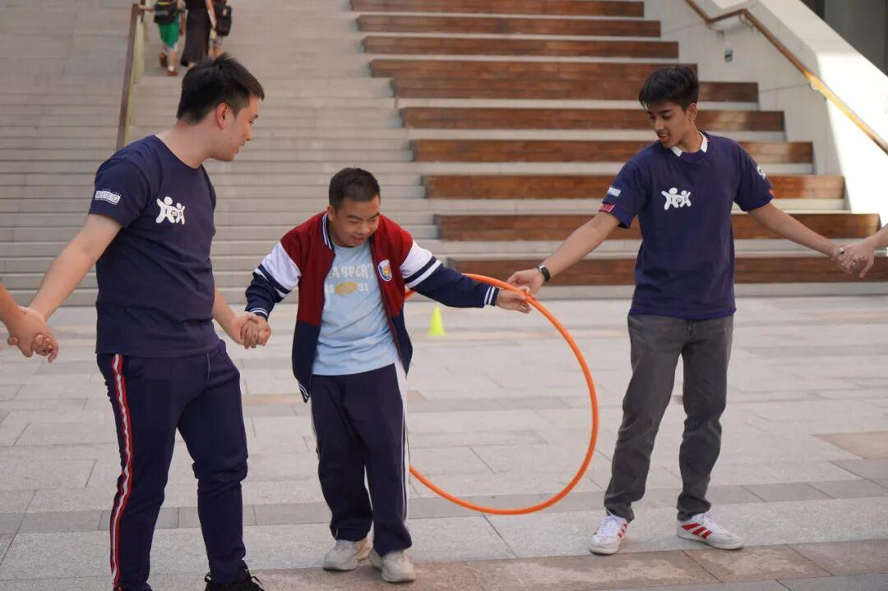
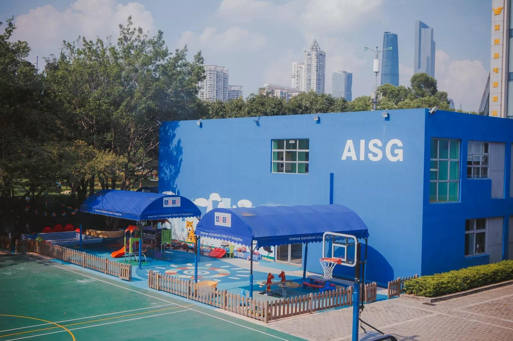

Indifferent to Difference
Itod GCED · AISG Service Club — supporting autistic youth in Guangzhou through hands-on service, campus advocacy and long-term partnership.
What We Stand For
We don't just fundraise — we go to the front line and interact with autistic individuals face to face.
Direct Service
Hands-on inclusive activities with autistic students at partner schools — cooking, sports, games and conversation.
Campus Awareness
Advocacy on campus through charity booths, events and autism awareness education for the AISG community.
Community Partnership
Long-term partnerships with Lingnan Vocational College and Xin Vocational Training to support local ASD youth.
Why "Indifferent to Difference"?
Because difference should never be a reason for exclusion.
Autism is not a disease and not a personality flaw — it is a different way of experiencing the world. In China, autism is still rarely talked about, and children with autism often don't receive the understanding they deserve.
Our club began with visits to Rong Ai Zhi Jia (融爱之家), an autism center in Guangzhou, and grew into a year-round programme of inclusive outings, campus fundraising and awareness work across both AISG campuses.
Indifferent to Difference means we don't ignore difference, and we don't treat it as a flaw. We accept it equally — and we walk alongside each other.
How We Serve
Four ways our club turns awareness into action, all year round.
Inclusive Outings
Field trips with autistic students — baking, zoo visits, art workshops and games at accessible venues across Guangzhou.
Campus Fundraising
Charity booths at Family Fun Day and Holiday Bazaar on both campuses raise funds for local ASD programs.
Awareness & Advocacy
ImpactGZ summits, International Day and classroom talks that teach the AISG community about neurodiversity.
Partner Support
Working alongside Lingnan Vocational College, Lingnan Foundation and Xin Vocational Training to support ASD youth long-term.
This Year's Activities
Five events across the year — three on campus, two with our partner schools.
Past Highlights
Moments from our two campuses and our partner-school activities.

From charity booths to campus tours — we hosted 20 autistic students from Lingnan at our Science City campus for an afternoon of connection. Photo: the campus tour, in small groups.

From Family Fun Day booths to International Day, our Ersha Island community keeps the same spirit of inclusion alive.
Our Outings in Pictures
A look back at the venues and activities from our inclusive trips — every outing is a chance to connect.
"Children with autism are like stars hidden behind clouds. With patience, we can clear the mist and hear the unique whispers of their universe."
— Kate Swenson